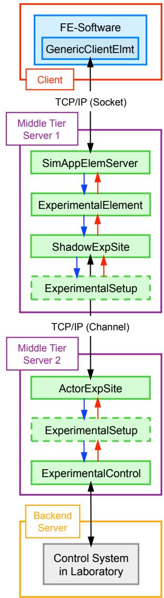
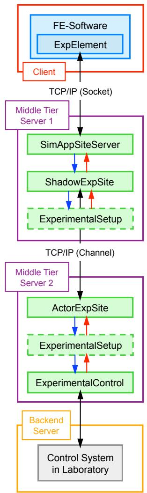

3.1. expElement 简介
这些命令用于构建实验单元对象。OpenFresco 提供了两种定义实验单元的方式。第一种也是更常用的方式是在中间层服务器端定义实验单元，并在有限元软件中使用通用客户端单元，如图6a所示。对于所有实验单元命令，此方法以黄色高亮显示。第二种选择是直接在有限元软件中定义实验单元，因此不在中间层服务器端使用任何单元，如图6b所示。具体来说，如果使用 OpenSees 作为有限元软件，可以使用灰色高亮的命令。其他有限元分析软件也可以使用此选项。每个单元都可以使用记录器命令来捕获仿真过程中的响应量。


图:在有限元软件中定义的通用客户端单元（左）和实验单元（右）实验单元与分析单元一样，具有质量、阻尼和刚度矩阵，并且在发生变形时会产生反力。由于实验测得的结构响应难以准确计算该单元的切线刚度矩阵（tangent stiffness matrix），实验单元无法通过回传切线刚度矩阵参与计算，只能基于给定的初始刚度矩阵（initial stiffness matrix）进行运算。([1] 郑弘, 于允文. OpenFresco开放式实验架构在多自由度混合实验中的应用. 中国台湾: 国家地震工程研究中心（台湾）; 2025.) 最新版本的可以使用切线刚度矩阵。
beamColumn (2D or 3D) Experimental Element
generic (1D, 2D, or 3D) Experimental Element
invertedVBrace (2D) Experimental Element
truss (1D, 2D, or 3D) Experimental Element
corotTruss (1D, 2D, or 3D) Experimental Element
twoNodeLink (1D, 2D, or 3D) Experimental Element
bearing Experimental Element